This Guide
- Is mainly intended for the average home user, thus it contains as few technical terms as possible and summarizes steps, actions, and risks.
- Is for Educational purposes only. Don't use it to break the law.
- Might contain some technical errors and/or linguistic mistakes, so please be kind and report them to me.
- Is a humble effort to explain how important it is to secure wireless (wifi) networks and the risks of leaving it vulnerable.
- Is an attempt to help the average home user secure his/her wireless network and its not about how to secure the devices connected to this network.
Intro
Technology is driving more and more home appliances to connect to the internet to become more "smart" and also to sell more products. In addition, wireless networks or the WiFi which is a technology that uses radio waves to connect devices together rather than using wires, is now more wide spread than ever, enabling all of these "smart" devices to connect to our home routers and so to the internet. Wifi is also more convince for traditional devices such as Desktops, Laptops, Tablets, and Mobile phones as it doesn't require us sitting in the same place as we used to do in the old days shackled by phone lines and LAN cables and allowed us to connect to the internet pretty much from anywhere in our homes with the help of a small device called "Wireless Access point" which is usually merged with the modem and the router in one device for convenience and we simply call it a "Router". However, all if this convenience came with a price, our security and privacy. It should be known that wireless communication is always more risky compared to wired communication and as a rule of thumb, never 100% secured. Not just that, but the manufactures who make most of the home wireless routers care only about selling more devices with the appeal that they are easy to use, takes minutes to setup, and anyone can do it plus they are full of features, but they don't really care about your privacy or security because it would be more hassle than it's worth for them. This is where this guide comes to play. The idea here is to provide a simple guide to help the average home user add more layers of security to his/her wireless network and improve its security and his/her privacy. The first version of this guide was in "PDF" format and in Arabic, but as I was preparing to release another version with some edits and fixes, I thought that making it in the form of a one page website accessible from any device without downloading anything would be more appealing for everyone to just get the info needed without much work. Also, its now easier to translate the guide into more languages to help more people secure their networks and have their privacy, which they might not know its under attack. You can simply stop using WiFi and bring those cables back for more security, but this isn't really a realistic solution, so just try to pick a few tricks from this guide to improve the security of your network and home, but keep in mind that no network can be 100% secured and that we are simply adding more measures to make it harder to breach. If you are interested in more information, you can simply search the internet using the keywords in this guide to dive deeper into the subject.
Contents
- Router
- Access Control
- Network Name
- Authinication Encryption
- Wifi Protected Setup
- MAC Filtering
- Risks
- Conclusion
Router
The starting point is the Router. Most modern home routers are actually 3 devices in 1 for convenience. Usually they consist of a "Modem + Router + Wireless Access Point, but for simplicity, I will call it router throughout this guide. A router is the gateway between our local network and the internet which is considered an external bigger network and most of them (almost all) comes with preconfigured firewall settings to block malicious attacks or unauthorized connections from the internet (the bigger, external network) from passing through this gateway and most of these settings do an OK job of filtering all unwanted access from the internet, but we are focusing in this guide on the the other settings that might allow someone to gain access to your local network by connecting to your WiFi network (which means they have to be in the proximity of your wireless network) or by connecting to your router from the internet (the outside network) through a misconfigured settings in the router. If you are in the market for a new router, then you should invest some time in reading reviews about the device you are going to buy and search for known issues or vulnerabilities with a simple search phrase like "TD-W8970 Vulnerability" and that should be enough to know if there are any issues with the device. Known Issues that is. If you already have a router, then it's also an important step to search for any related issues or vulnerability and also update the firmware if there are any updates from the manufacture. There are 2 main ways to connect to your router's settings and they are:
- Local Access
- Remote Access
Local Access
Local Access means connecting to your router from your local network. In other words, from any of the devices that are connected to your WiFi network or from any device connected to your router via a LAN cable. This is the default way you should use and the more secured than Remote Access method. There are sub methods under Local Access to connect to the router, but the best and simple way for a home user is to connect to the router via the web interface meaning you connect to the router using your internet browser (such as Chrome, Firefox, Safari, and..ehm..Internet explorer or Microsoft Edge) and you do so by typing the Local Internet Protocol Address (Local IP for short) in the address bar of the browser and most routers use the IP "192.168.1.1" or "192.168.1.254" out of the box, but if you don't get to a page using those 2 addresses, then review your router's manual. 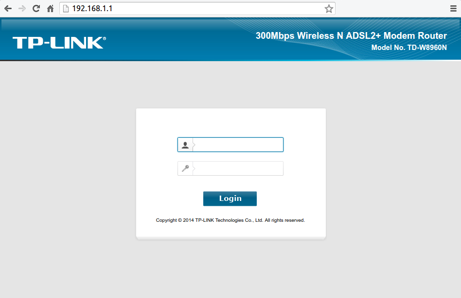 Some devices will have the option to only allow devices connected to the router via the LAN cable to get to the router settings and most routers will come with a short cable that you can use for this purpose. You should enable this option if it exists to limit the access to the router's settings page and use the cable whenever you need to access it.
Remote Access
If the router is a gateway, then as you can reach it from the local network, you can reach it from the other side. why? maybe you are traveling or away from home, but need to modify the settings or simply you are facing some issues and your ISP (Internet Service Provider) needs to access the router to see whats the problem while your on the phone with them rather than wait for a home visit. No matter what the reason, the option is there and you need to disable it whenever you don't specifically need it. When you want to use this method to access your router from outside your local network, You would use the router's "Public IP Address" rather than the local address (such as 192.168.1.1) and you can search google for "What is my IP adress" to find out your public IP address. Keep in mind that some ISP will change your public IP address from time to time if they don't provide you with a static IP address (Dynamic vs. Static IP Address). All of these options will be under a section called "Access Control" in the router's web interface page.
Access Control
After connecting to the router's settings page, You will be asked for a user-name and a password and if the device is new or You've never changed them, they will be "admin" and "admin" for both. You can review the device's manual or search the internet
for your router's model and "Default password". The first thing you should do after logging in, is change the default user-name and password to something else, because as you guessed, everyone would know and try them if could reach the router's page.
You would be amazed by how many routers are still using the same default credentials and accessible from the internet through the remote access option which are even periodically cataloged by search engines such as Shodan. You should use a strong, unique password that have no meaning to you or in the language such as "bwpFW93F#fm20BN" or "HeLuWK2038Be30" and if Your router allows You to change the user-name, You should change it from "admin"
to anything else and preferably not your name or a name that has any connection with you, if possible. You should also make sure that if Your router comes with hard-coded users such as "user" and "support", that You change the password for those as
well.
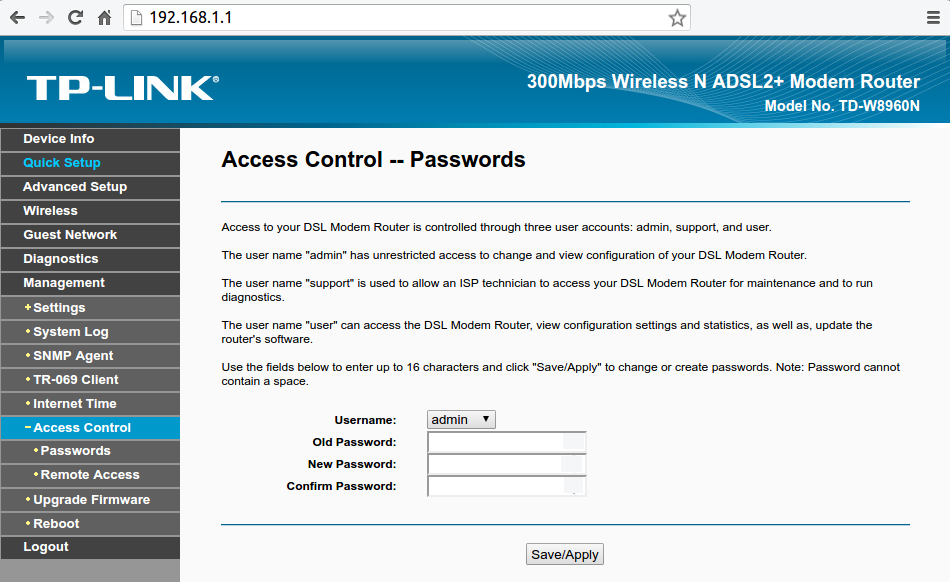 The layout and the naming of sections could be different from router to router, but you should be able to figure out what you are looking for in a little time with the help of this guide and your router's
manual or of course, the internet. Under this section (Access Control) You will also find the remote access option and should disable it. All the sub option under remote access should be disabled and enabled only when needed for a short amount of
time.

Network Name
Naming Your WiFi with a name that can lead back to You is not really safe because it provides an easy way for a potential attacker who might be looking for You specifically especially if You live in an urban area. Or could simply provide someone who is looking to gain access to the network with easy information that could be leveraged to give him access, for example a neighbor who might know your kids name and finds your WiFi network name could try Your kids names for the password..or your phone number, pet's name..etc. 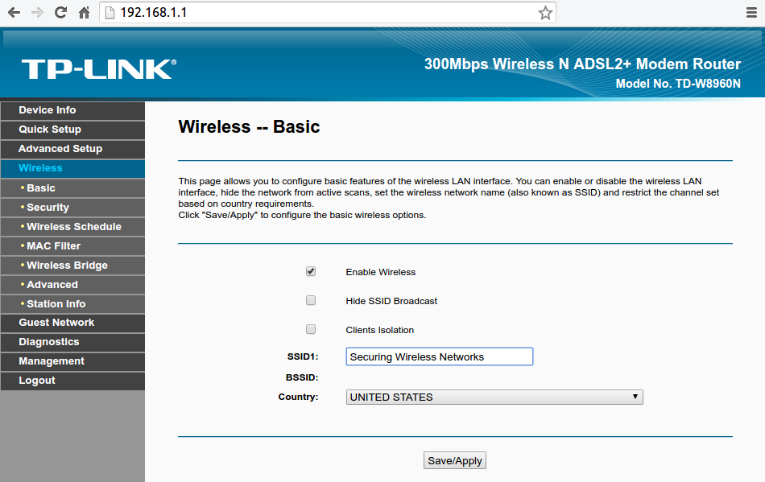 You could also choose to "Hide SSID Broadcast" (SSID simply means the WiFi network name) so that when someone is looking for available WiFi networks will not see that Your WiFi exists and Your devices who already connected to the network before would connect normally as usually and new devices can easily connect by choosing "Other Networks" or "Connect to a hidden Network" when trying to connect. This option adds a good layer of security especially to deter amateurs or just those are looking for a free internet access, but a more professional attacker will be still able to see Your network. As a good measure, You shouldn't leave the WiFi name (SSID) with the default value because it would give easy info to amateurs trying to get access to your network by figuring the device's default passwords or services and even vulnerabilities if they exist. Some ISP that provide the router for You can sometimes preconfigure it to broadcast their name which is an easy way to gather info about You or the network. However, every router has a unique ID that is called "MAC Address" and that's short for "Media Access Control Address" which will allow a more advanced attacker to know the device's manufacture at least. Your router could have an option called "Clients Isolation" or something similar which will prevent the devices connected to the router or on the network from communicating with each other and this is a good measure in case someone did breach your network, but this means you won't be able to connect to your chromecast for example or your WiFi enabled coffee maker.
Authinication Encryption
Still to this day, this is one of the biggest problems and security issue when it comes to WiFi. Some home users would simply ignore this security measure for some reason or another. According to "Wigle" which is a database for WiFi networks gathered through "Wardriving", there are 19,716,016 WiFi network out of 290,179,693 widely open for anyone to access. Those include public hotspots and free WiFi, but also home networks that their owners don't care, or don't know better. Its Authentication Encryption so its not network encryption. It simply means that the method the password to the WiFi network is encrypted with before a device asking to join the network provide this password to the router to prove that the device is allowed on the network. If you use a weak encryption, then someone monitoring this operation could easily capture and decrypt the password. In general there are 4 settings: 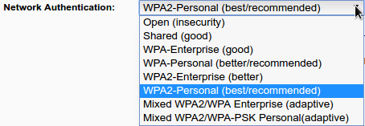
- Open
- WEP
- WPA
- WPA2
Open
It's basically allowing anyone to gain access to the network and this is against everything this guide is trying to "guide" you through. Even if You want to share the network with others, its better to use a good encryption settings and a powerful password and then share this password with users allowed on the network. Some routers will have an option to enable "Guest Network" which will create another WiFi network You could share it with Your guests or friends and keeping them separate from Your main WiFi network.
Wired Equivalent Privacy
Or WEP for short, has a misleading name. Basically, it's as good as leaving the WiFi network Open. If you use this setting, then Your password can be cracked in about 2 minutes by someone who have a vague idea about what he/she is doing. a program like "Aircrack-Ng" provides good tools to crack the password no matter what or how long it is. Some routers use this setting by default. why is it still there? to provide compatibility with older devices..like from the late 1990s. 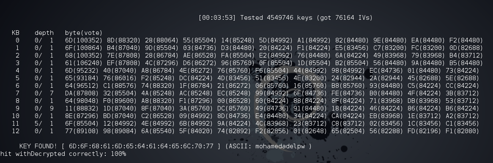
WPA and WPA2 Protocols
After it was discovered how vulnerable WEP was, the WiFi Alliance quickly moved in the direction of implementing a more secure way for authentication and introduced WPA in 2003 as a quick fix for WEP and to pave the way for the more secure and complex protocol; WPA2 that became available in 2004. So the only way to have a good and powerful authentication encryption is to use WPA2 with a good password and without enabling WPS. As always, WEP and WPA are kept as options to provide backward compatibility. WPA and WPA2 can still be broken if You use a week and/or common passwords and in case of targeted attack, a password that is personal like Birth-dates, anniversaries, names ..etc. so using WPA2 and using a password like "apple" or "123456789" is simply idiotic. The best practice is to use WPA2-personal (or WPA2 with AES, CCMP, AES-CCMP) which differs from router to router, but means the same thing. AES or (the Advanced Encryption Standard) is a specification for the encryption of electronic data. You can read more about how encryption work and such, but to make things simple, let's say that AES for example uses an algorithm that calculate or cipher the password into a hash or ciphered string and that ciphered string can't be recalculated back to the original word so encrypting the word "apple" with AES gives us "2fsGsNtyFu8Y16fWGLMxMA==" (read more about Cryptographic hash function) so if an attacker got hold of the hashed string, he/she can't turn it back to "apple", but the attacker could use the same encryption method to encrypt random words or passwords and then compare the strings generated to the encrypted password he/she got. Attackers will use AirCrack-ng to capture the handshake between the router and the devices connecting to it and can use 2 attacks methods to "crack" the WPA2 password. Those 2 methods are Dictionary attack and Brute-force attack and they both combined, target weak, common, meaningful, and short passwords. 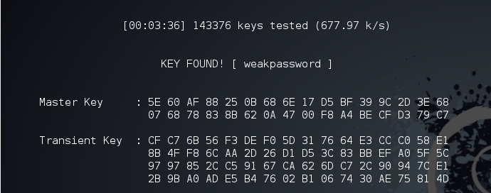 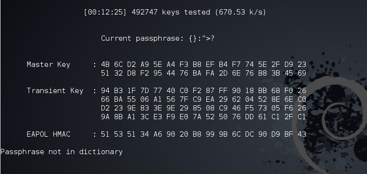 This means that You have to use a good powerful password and follow the best practices when it comes to choosing your WiFi password (and any password for that matter) so you should long password with letters, numbers, and special characters and they should mean nothing both personally and generally like "HeLuWK2038Be30" or "bwpFW93F#fm20BN" or "LttSw2F44dEOO0" and so on.
Wi-Fi Protected Setup
Or WPS for short, is a network security standard to create a secure wireless home network, however it created a less secure wireless home networks, because the PIN method which is implemented in mostly all modern home routers could fail against brute-force attacks no matter what the WPA2 or the WiFi password is. If WPS is enabled, the network could be breached within 2 days of brute-forcing and in reality and most cases, this could happen under 4 hours or if Your router uses certain chips from makers including Ralink, MeddiaTek, Realtek and Broadcom, could be cracked within a minute and 30 seconds with an attack called "Pixie Dust attack and there are many tools to automate these types of WPS attacks, Reaver being the most known. Most routers and APs come with WPS pre-enabled and should be disabled by the home user because how vulnerable it makes the network. 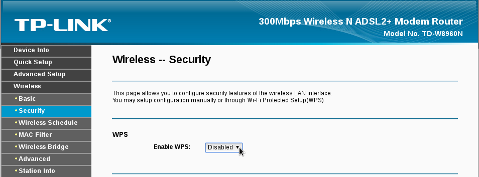
MAC Filtering
Media Access Control Address (MAC address for short) is a unique identifier assigned to network interfaces. Simply, it is a serial number that belongs to the wireless chip in Your devices being a laptop, tablet, or mobile phone and as the title implies, MAC filtering is an option to create a list of MAC addresses to either be allowed or denied from the network and the best practice is to create a list with all the devices that will connect to the WiFi network and only allow those devices using the MAC filtering option. Keep in mind that MAC addresses could be spoofed, but MAC filtering is just another layer of protection to make it harder for an attacker to gain access to the network. You can Google how to find a device MAC address under Your OS (Windows, OS X, Linux, Android, IOS) or You can find out the connected devices to your network through your router settings by searching for "Devices Info" or "DHCP" sections or simply googling with your device model like How to find connected clients on TD-W8960N. You can also use network scanners like Nmap or Fing. 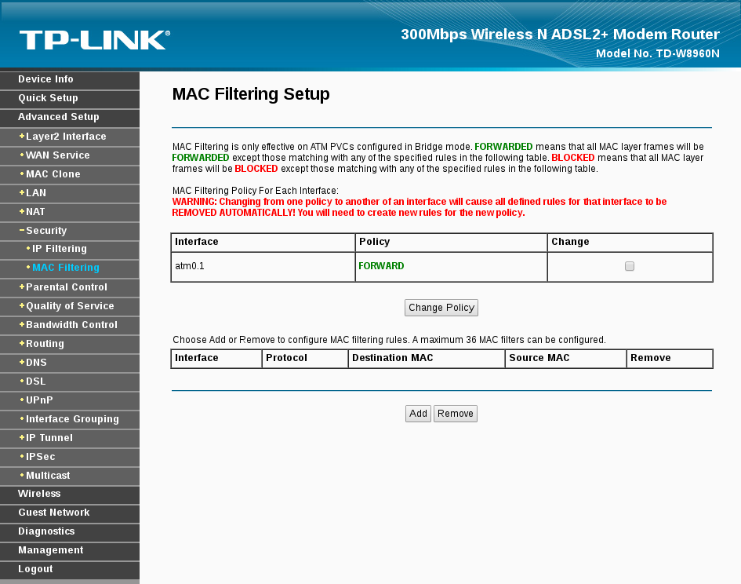
Risks
You might think that's alright if someone have access to your WiFi network and You are all about sharing that internet with others, helping them connect, but the risks are far more dangerous than you might think. a Person could just mess with Your network settings for fun or as a prank. another could use Your network to access the internet to download/upload illegal materials implicating You. an online drug dealer could be connecting to the TOR network through Your WiFi. All of this isn't so dangerous after all. a more malicious person could do a lot more targeting You, Your Privacy, Data, Photos, and more.
Social Engineering
Social Engineering is psychological manipulation of people into performing actions or divulging confidential information. It is a type of art and highly depends on the attacker's personality and ability, but also on the background information he/she can use to convince manipulate You and an attacker can figure out a wealth of information just by being connected to your WiFi. It's easy to figure out the type of devices You have in Your home and the names of people using them and can leverage all this information to even get more through social media and the internet using simple tools and techniques. 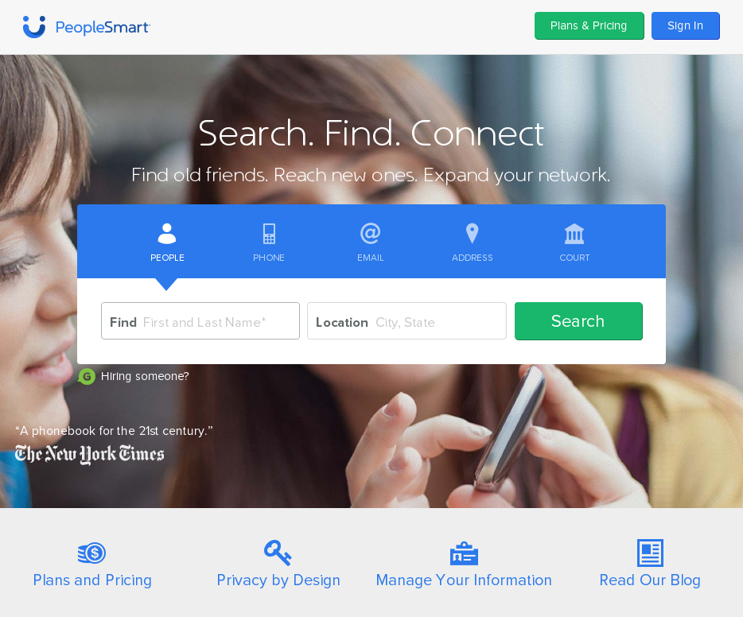 Sometimes, Your router settings might contain some personal information such as your ISP user-name and password and such. Some ISP even let anyone browsing their portal through the network, to access the subscription settings without authentication, but that is rare nowadays. 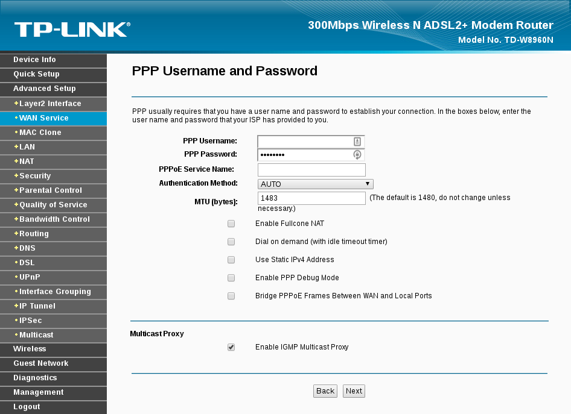 You could be even using the same WiFi password for Your online accounts (shame on YOU) which once cracked, the attacker might use to gain access to Your accounts or could use a tool like Firesheep and other to gain access to Your accounts.
Network Monotiring
A malicious person on the network can simply sit there monitoring everything that happens on the network. Using attacks such as Man-in-the-middle attack putting him/herself between all the communication going between all the devices and the internet and possibly even altering them, serving You with spoofed sites to gather your passwords, banking information and even trick You to install malware that could help him/her take full control of Your device (Flash needs to be updated? sure install updates). The attacker can also "sniff" or eavesdropping on Your communications capturing Your chats, passwords, photos, browsing habits, and more. 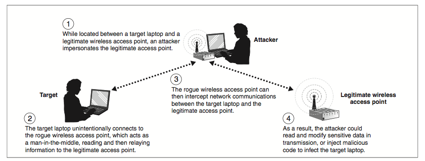
Exploiting
Exploiting could sound more difficult than it really is. Most likely, an attacker can connect to different devices on the network using default user-names and passwords or even without needing them, because home users don't know any better. You have this monitoring camera that could only be accessed from the local network, so who needs a user-name and a password, right? WRONG! You should really make sure that every device and service on the network requires authentication and that the default credentials are changed to something more secured and that they don't face the outside network (the internet) if you don't really need to access them from outside Your home network, same as the router or they can be used in botnets to launch attacks such as DDOS attack (like the one launched on October 21st 2016). A simple search on Shodan would yield a lot of webcams, security cams, storage devices, and more "smart" devices connected to the internet and available to everyone without any security measures or with the default credentials that can even allow an attacker to gain access to your WiFi network without targeting Your router or AP. Exploiting is even more dangerous than that, because a lot of devices and services might contain vulnerabilities that allows the attacker to gain access. These vulnerabilities could be known to the public and might already have updates or patches to fix them, but the home user didn't update the devices, or they could be unknown yet to the public and only the attacker (or a few people) knows about them and those are called Zero-day vulnerabilities and there are no updates or patches available yet to fix them. That's why you should periodically update Your OS (Operating systems), applications, and the devices firmwares such as routers, security cams, and Your smart fridge. 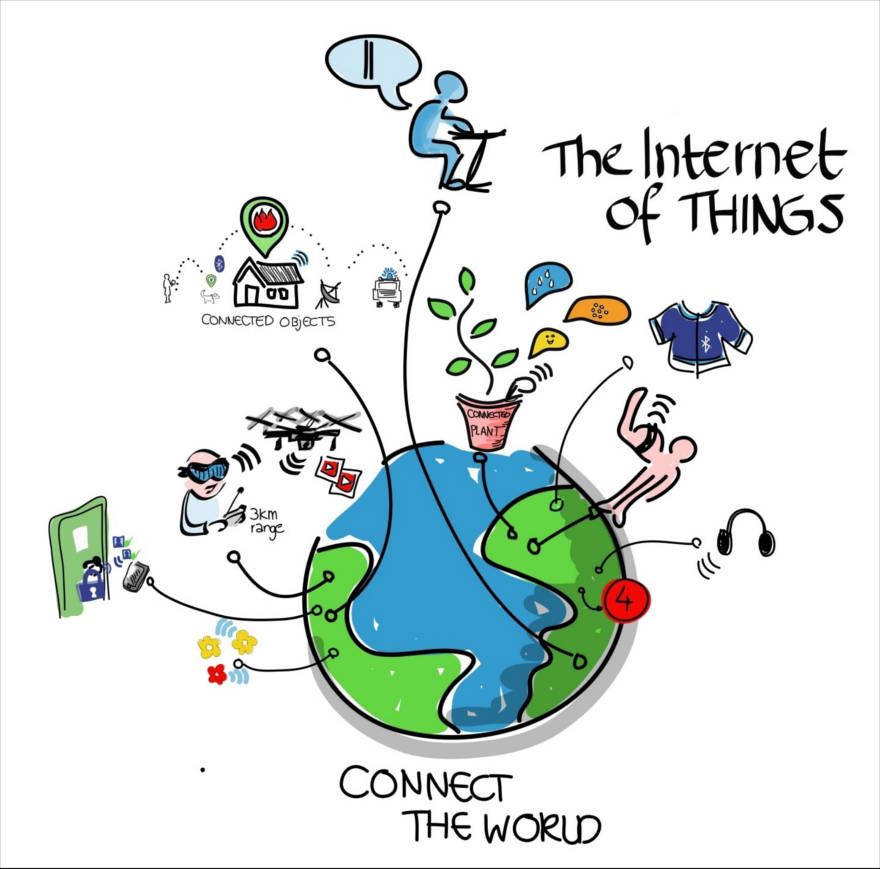
Conclusion
If You follow this guide, then You would have implemented a few good layers of security that would make it harder for anyone to get inside your network through the WiFi especially the amateurs or anyone looking for an easy target. You can also ask for a professional help and hire someone to make sure that all of these settings and layers are in place and checked.
- Don't name Your WiFi network:
- With any personal information such as names, phone numbers, date of birth, or anything that can lead back to You.
- a Name that identifies Your Router's or Access Point's type or Your ISP or Your network layout.
- Hide SSID broadcast if possible.
- Don't leave the WiFi network open even if You intend to share it with others.
- Use WPA2 Protocol (with AES).
- Use a long password that has no meaning and contains letters, numbers, and special characters.
- Don't use a password that has a personal meaning to You or contains any personal data
- Change the default credentials of the router's/Access Point's settings page.
- Disable remote access to the router if You don't need it.
- Disable WPS.
- Enable MAC filtering and create a list with devices allowed on the network.
{kind=link}